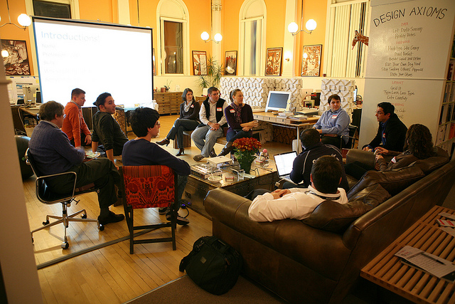

Keeping motivated in IT
Push yourself, others and staying motivated
Four brief summary’s of ways in which people can keep motivated within the IT industry.
1. Make boring work fun
Credit: عبدالرحمن القصيِّر from flickr
The Problem
Look, we have all been there. Given the BAU (business as usual) task, the work that you can’t engage with, you know the boring tasks, minimal reward and no fun.
The Solution
Simple. Make the task interesting, challenging and enjoyable.
Sometimes we are given tasks that were not really interested in. Maybe its fixing tests, or bug fixing? Personally I get demotivated and bored quite fast with certain tasks, but I have learnt recently that I can easily make these tasks more enjoyable and more rewarding.
Rather than cracking on with the task, maybe we can look at it with a different angle?
Maybe its exploring different test tools you could use? Different patterns you could use to fix your bugs and issues? Could we try to accomplish a high level of test coverage? Can we make the task more interesting by pairing or mobbing together on a task?
When we think about it there are tons of ways in which we can make a task more enjoyable, fun and challenging and it can drive our motivation and passion into completing the task; making a task that once was boring now enjoyable.
2. Learn, learn, learn and don’t stop
Credit: Shawn Harquail from flickr
The Problem
The world is moving and you can’t keep up with everything. If you stop learning you get unskilled, demotivated and bored.
The Solution
Take time out. Read, blog, listen to podcasts, watch tech talks, sign up to newsletters, code, talk at events, host events, etc…
“…Figure out your goals, especially your learning goals…”
What I have learnt is that we all go through a process of peaks and troughs when it comes to learning. Like a roller coaster. Have you ever wondered during your low stage of learning why you are no longer learning anything?
Try looking at different mediums of learning. Maybe it’s going for a walk at lunch listening to a pod cast? Maybe its blogging about things your interested in? Maybe it’s exploring and joining you local community and engaging in new ways in which you wouldn’t before.
Its important we push ourself out of our comfort zone and start exploring new ways in which we can push ourselves and those around us.
3. Working on side projects
Credit: Dmitry Baranovskiy from flickr
The Problem
I don’t have time for side projects? I don’t have any ideas for side projects?
The Solution
Just start. If you feel you don’t have time, find some and start investing in yourself.
Side projects and open source projects are great way to explore and learn new technologies, thoughts and principles. Haven’t got a side project? Just make one.
Get your ideas and thoughts on paper and start building.
Developers are similar to artists, we have a blank canvas its up to us to paint, so just get your hands dirty and paint something. Doesn’t have to be perfect, but if you get your hands dirty, you will be better today than what you were yesterday.
Pick up a side project, invest a few hours a week into it and you eventually will see the rewards.
4. Community
 Credit: Juhan Sonin from flickr
Building, contributing and giving something back to the community is one of the biggest rewards and motivation in my opinion. If you get motivation through other people this is a great platform.
“Doing something that matters, doing something in a cause larger than ourselves.”
Explore your local meetup groups, is there anything around that interests you? If not, create something and get like-minded people together talking about stuff that really motivates you.
Hosting events isn’t as scary as it sounds. If you need any advise or help feel free to contact me.
I would love to hear ways you keep motivated.
Feel free to comment your thoughts below or share this post if you enjoyed it.
If you would like to get involved in one of my side projects please check it out.